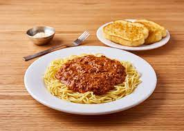

Spaghetti

Look at that beaut, one of americas favorite italian cuisenes
Spaghetti has been in america for 1 million years, this savory meal goes great with 6-12 bottles of wine, try pairing with a 4-loco
Ingredients
- water
- salt
- noodles
- tomato sauce
- microgreens
- parmesean
Steps
- put pan on high heat
- throw in water, and let boil
- while water is boiling salt the water(important to do this before adding noodles)
- add noodles, stir occasionally
- after about 10 minutes, check noodles firmness, should be al dente!
- drain water, add tomato sauce on top of noodles
- plate spaghetti and add fresh microgreens on top
- sprinkle parmesean on top
- VOILA ENJOY!